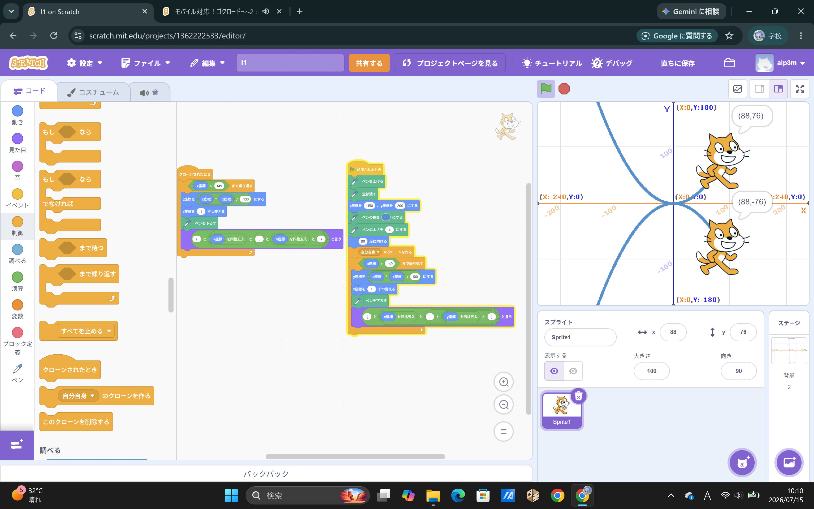
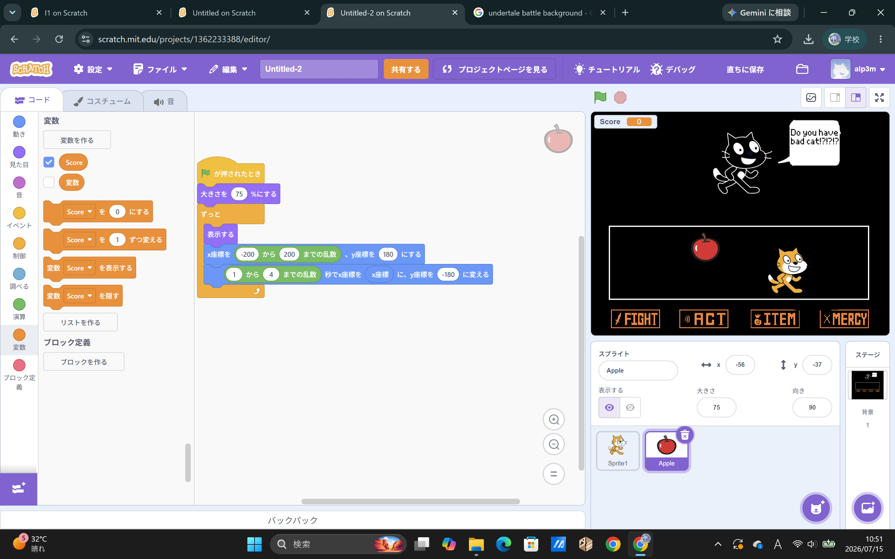

1週目のレポート ： 公大高専１年実習I-1
1a班3番 rr26010m
第1週目
1-1 サイエンスアート

1.内容
scratch内の、スプライトのX座標とY座標を関数の座標に見立てて、y=(x^2)/100のグラフを描くようにした。
また、y座標をマイナスにしたものも同時に描くようにした。
2.感想
scratchは今までも触ったことがたくさんあったけど、今回授業でやったことはとても新鮮で、自分の個性を発揮できたと思う。
1-2 ゲーム

1.内容
リンゴをキャッチするゲーム。左右に移動して、上から落ちてくるリンゴのスプライトをキャッチする。ゲームの背景は、某RPGを参考にした。
パクリではない。インスピレーションを得た。
2.感想
自分が今まで趣味としてやってきたscratchで、今まで得た知識をフル活用してゲームが作れた気がしたから、とても楽しかった。
1-3 ホームページ作成
私のホームページ
1.内容
githubを使って自分だけのウェブサイトを作る方法を学んだ。JavaScript、HTML、CSSを使ってウェブサイトを作るために必要な基礎知識を学ぶことができた。 2.感想
最初に自分でウェブサイトを作ると聞いた時は自分の知識で足りるかどうか心配だったけど、
もとからほとんどすべて書いてあってそこに自分の情報を追加するだけだったからとてもやりやすかった。
各ページへのリンク
1週目のレポート
2週目のレポート
3週目のレポート
私のホームページ